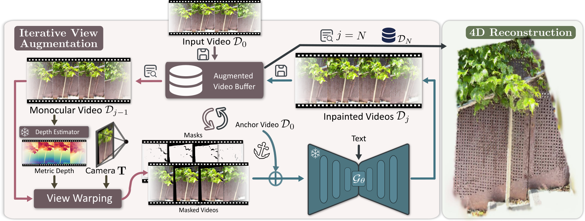

Pipeline.
Given an input monocular video, we first perform sparse reconstruction to obtain camera poses and align monocular depth to metric scale, forming an initial data buffer \(D_0\). In each iterative view augmentation step, we select frames at each timestamp from the previous buffer \(D_{j-1}\) and warp them to novel viewpoints using pre-defined camera poses \(T\), creating new perspective videos with continuous invisible region masks. These masked videos, along with binary masks and an anchor video, are fed into our pre-trained anchor-conditioned video inpainting diffusion model to produce completed novel-view videos. We update the buffer \(D_j\) with these enhanced videos, their metric depths and poses. Finally, both the original monocular video and all synthesized multi-view videos are used to supervise 4D scene reconstruction.